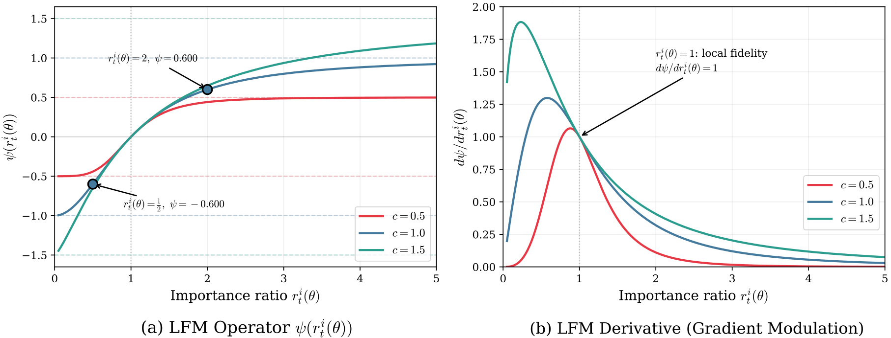
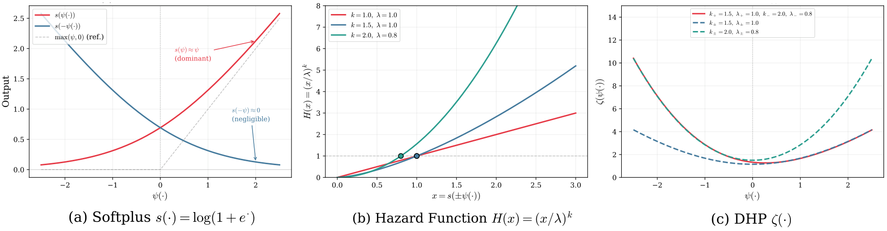
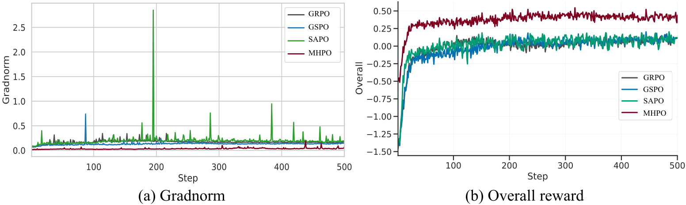

Code
BibTeX
Code
BibTeX
Smooth Ratio Control with Bounded Gradient Multipliers and Asymmetric Hazard Penalties
Regulating the importance ratio is central to the training stability of Group Relative Policy Optimization (GRPO) frameworks. Prevailing ratio-control methods, such as hard clipping or direction-agnostic masking, produce non-differentiable boundaries and vanishing gradient regions, and fail to preserve gradient fidelity. These methods also lack a hazard-aware mechanism that adaptively suppresses extreme deviations, which leaves the optimization process vulnerable to abrupt policy shifts. To address these limitations, we propose Modulated Hazard-aware Policy Optimization (MHPO), a framework for stable reinforcement learning. MHPO introduces a Log-Fidelity Modulator (LFM) that maps unbounded importance ratios into a bounded differentiable domain, thereby preventing high-variance outlier tokens from destabilizing the loss landscape while ensuring global gradient stability. MHPO further introduces a Decoupled Hazard Penalty (DHP) that integrates cumulative hazard functions from survival analysis to regulate positive and negative policy shifts separately. The resulting framework achieves fine-grained regulation of asymmetric policy shifts, mitigating mode collapse from over-expansion and preventing policy erosion from catastrophic contraction within a stabilized trust region. Evaluations on mathematical reasoning benchmarks demonstrate that MHPO achieves the strongest overall performance among existing methods.
The MHPO objective replaces the clipped surrogate in standard GRPO with a smooth, bounded transformation:
where $\psi(\cdot) = c\tanh(\log(\cdot)/c)$ is the Log-Fidelity Modulator and $\zeta(\cdot) = (s(\psi(\cdot))/\lambda_+)^{k_+} + (s(-\psi(\cdot))/\lambda_-)^{k_-}$ is the Decoupled Hazard Penalty.
The LFM projects the importance ratio into log-space and bounds its contribution via a smooth saturation function. It exhibits three key properties: (P1) High-fidelity local mapping near the on-policy anchor; (P2) Smooth gradient attenuation in the tails via $\text{sech}^2$; (P3) $C^\infty$ differentiability preventing Adam optimizer perturbations.

Figure 2: Characteristics of the Log-Fidelity Modulator. (a) The LFM operator with different values of $c$, showing reciprocal antisymmetry and smooth bounding. (b) The derivative demonstrating smooth gradient attenuation while preserving local fidelity.
The DHP uses the Weibull cumulative hazard to shape the optimization landscape with direction-aware penalties. Positive shifts are regulated mildly to preserve exploration, while negative shifts receive stronger suppression to prevent irreversible policy erosion caused by branch-wise occupancy decay.

Figure 3: Analysis of the Decoupled Hazard Penalty. (a) The penalty $\zeta(\psi)$ with different $(\lambda, k)$ configurations, showing asymmetric suppression. (b) The survival weight $w = \exp(-\zeta) \in (0, 1]$ — the DHP can only attenuate, never amplify.
The gradient multiplier $\mathcal{M}(r)$ satisfies $0 \le \mathcal{M}(r) \le M_\psi(c)$ for all $r > 0$, where $M_\psi(c) = \frac{2}{1+\sqrt{1+c^2}} \exp\!\left(\frac{c^2}{1+\sqrt{1+c^2}}\right)$. Under any behavior distribution $\mu$, the normalized mini-batch gradient satisfies $\mathbb{E}_\mu[\|g(\theta)\|^2] \le \sigma_A^2 G^2 M_\psi(c)^2$ and $\Pr_\mu(\|g(\theta)\| \ge \tau) \le \sigma_A^2 G^2 M_\psi(c)^2 / \tau^2$.
Avg@32 (%) for the best checkpoint. All methods trained on DAPO-Math-17k-Processed with verifiable outcome-based rewards.
| Method | MATH500 | HMMT25 | AMC23 | AIME25 | AIME24 | Avg. |
|---|---|---|---|---|---|---|
| Baseline | 57.2 | 3.8 | 41.3 | 5.7 | 8.8 | 23.4 |
| GRPO | 64.8 | 11.1 | 81.3 | 30.8 | 40.4 | 45.7 |
| GSPO | 66.2 | 12.4 | 83.5 | 34.0 | 39.7 | 47.2 |
| DAPO | 64.0 | 14.9 | 75.8 | 29.2 | 34.2 | 43.6 |
| SAPO | 66.4 | 11.5 | 81.4 | 32.9 | 39.6 | 46.4 |
| CISPO | 69.0 | 11.0 | 85.3 | 33.5 | 43.7 | 48.5 |
| MASPO | 67.5 | 12.8 | 82.6 | 34.5 | 40.8 | 47.6 |
| MHPO (Ours) | 70.9 | 19.4 | 88.2 | 41.4 | 44.7 | 52.9 |
Avg@32 (%) for the best checkpoint. Demonstrates scalability to large Mixture-of-Experts architectures.
| Method | MATH500 | HMMT25 | AMC23 | AIME25 | AIME24 | Avg. |
|---|---|---|---|---|---|---|
| Baseline | 76.5 | 1.6 | 43.6 | 9.0 | 14.2 | 29.0 |
| GRPO | 82.8 | 35.3 | 78.4 | 28.9 | 31.6 | 51.4 |
| GSPO | 84.1 | 36.9 | 80.6 | 29.8 | 32.4 | 52.8 |
| DAPO | 84.5 | 37.2 | 81.0 | 30.2 | 32.8 | 53.1 |
| SAPO | 83.2 | 34.6 | 76.8 | 30.7 | 29.4 | 50.9 |
| CISPO | 85.4 | 37.8 | 82.3 | 31.6 | 33.1 | 54.0 |
| MHPO (Ours) | 86.6 | 37.3 | 83.6 | 32.4 | 33.8 | 54.7 |
Per-sample effective gradient shifts: hard-clipped baselines produce many dead or saturated tokens, whereas MHPO concentrates updates in a stable band while preserving decayed tail signals.

Figure 4: Training stability comparison across methods. MHPO keeps updates in a stable band around the on-policy anchor while preserving decayed tail signals, consistent with the theoretical stability certificate.
Hyperparameter sensitivity sweeps on Qwen3-4B-Base (macro-average Avg@32, %).
$c=0.5$: 50.9%
$c=1.0$: 51.3%
$c=1.5$: 52.0%
$c=2.0$: 51.7%
$k=1.0$: 52.0%
$k=1.5$: 52.3%
$k=2.5$: 52.6%
$k=3.0$: 52.9%
$\lambda=0.5$: 52.5%
$\lambda=0.8$: 52.9%
$\lambda=1.0$: 52.7%
$\lambda=2.0$: 51.9%
The LFM alone (hazard-free) is stable but remains below the full MHPO configuration, confirming the added value of the hazard penalty. Larger $k$ improves over near-linear damping (superlinear Weibull regime), and intermediate $\lambda$ best balances exploration and tail control. The default setting stays in a high-performing region across all sweeps.
@inproceedings{wang2026mhpo,
title = {MHPO: Modulated Hazard-Aware Policy Optimization
for Stable Reinforcement Learning},
author = {Wang, Hongjun and Liu, Wei and Gu, Weibo
and Sun, Xing and Han, Kai},
booktitle = {Advances in Neural Information Processing Systems (NeurIPS)},
year = {2026}
}